0最初の案内は、あとから何度でも
初めて開くと、機能の横に吹き出しが出て順に案内します。最後に「次回から出さない」を外せば毎回出ますし、消したあとも ヘッダーの「使い方」からいつでも呼び出せます。
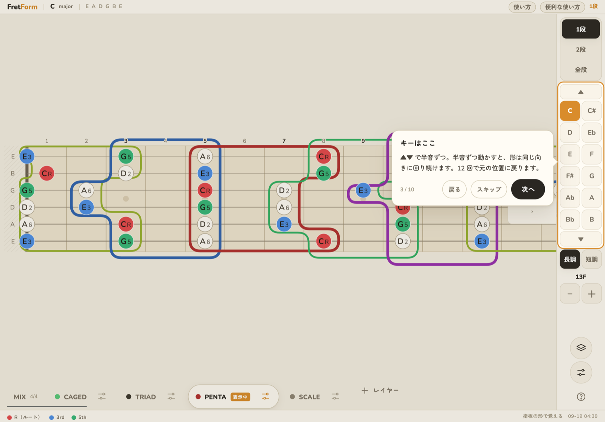
FretForm は「どのフレットが何の音か」を暗記するための表ではなく、形が指板の上をどう動くかを見るための画面です。ここでは、実際に手が動くようになる使い方を 6 つ。
初めて開くと、機能の横に吹き出しが出て順に案内します。最後に「次回から出さない」を外せば毎回出ますし、消したあとも ヘッダーの「使い方」からいつでも呼び出せます。

最初に開くと、ペンタ・CAGED・トライアド・スケールを全部重ねた MIX が 1 段で出ます。情報量は多いですが、ここで見るのは 1 つだけ — 赤い丸（ルート）がどこに散らばっているかです。
同じ位置に複数の層が来たときは、上の層が丸を塗り、下の層はその外側の輪になります。「この音は CAGED の C フォームであり、同時にペンタの Box 1 でもある」が一目で分かります。
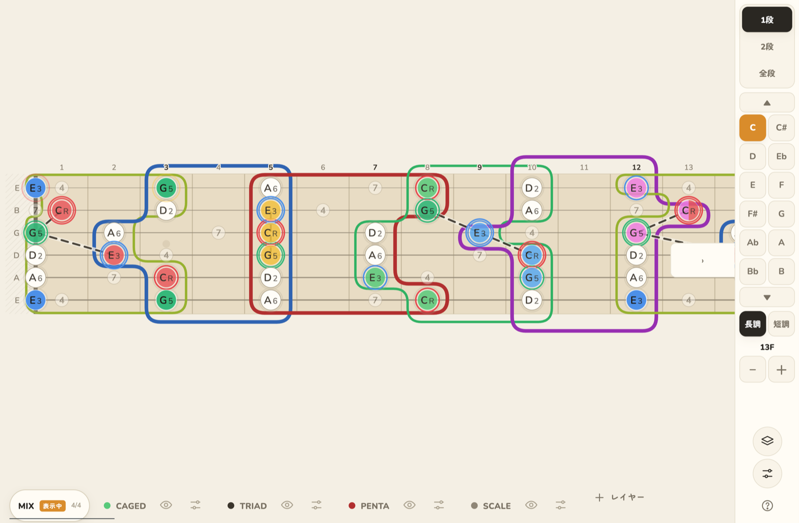
5 つの Box を全部出すと、指板は色の壁になります。覚えるときは 1 つだけ点けて、キーを動かすのが早い。ペンタのスライダーアイコン → 型 の行で、Box 1〜5 を個別にオン／オフできます。
Box 1 だけを出したままキーを半音ずつ上げていくと、同じ形が 1 フレットずつ上がっていくのが見えます。12 回上げると元の位置に戻ります。
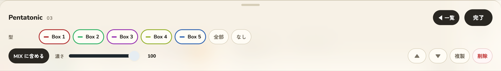
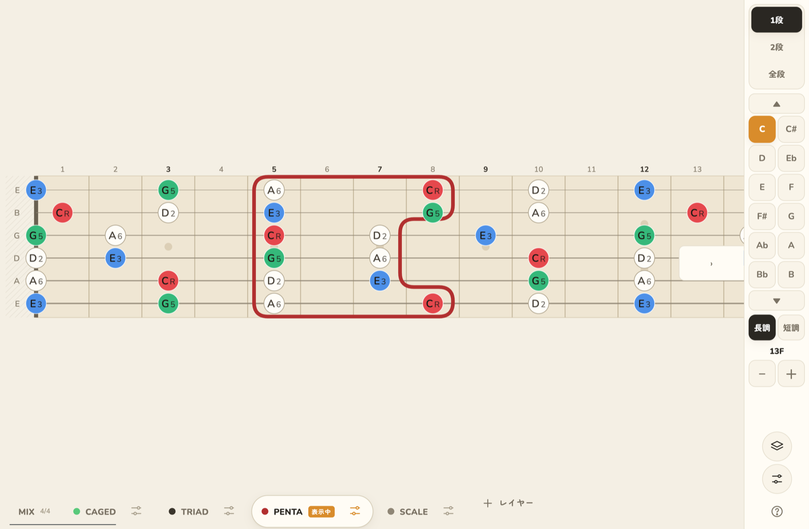
慣れてきたら全部出します。隣り合う Box が必ず音を共有していること、5 つで指板が一周することが見えます。
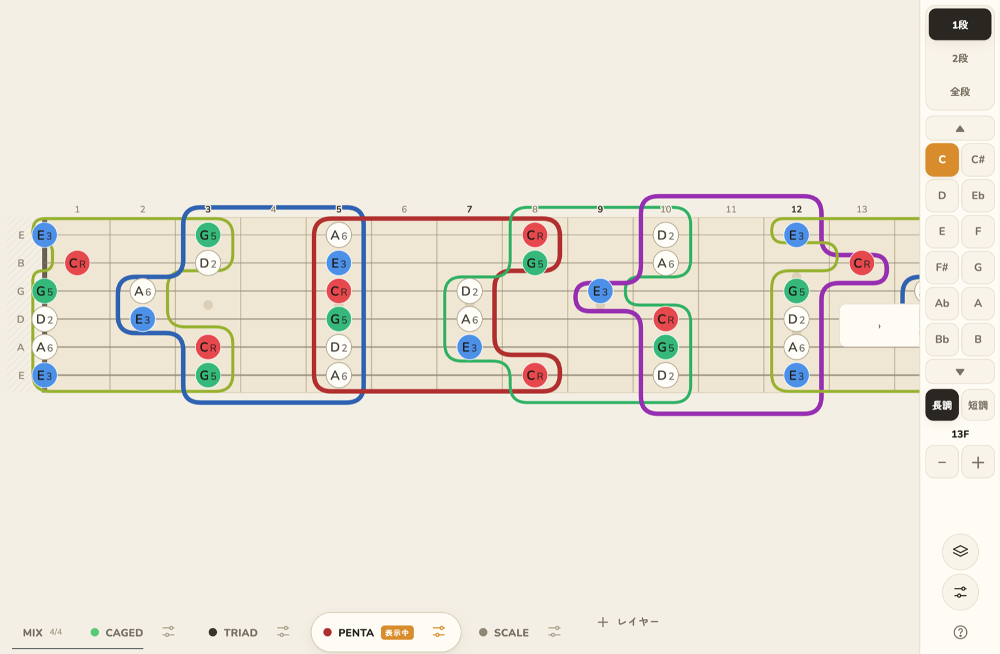
CAGED は囲み線を引きません。開放形で指が押さえる音だけをフォームの色（C 赤 / A 黄 / G 緑 / E 青 / D マゼンタ）で塗り、開放弦だった音は薄く沈めます。だから色の付いた丸だけを追えば、そのフォームの握りがそのまま見えます。
段の上にはフォーム名が出ます。C→A→G→E→D の順にネックを上がり、12 フレットで一周することを確認してください。D と次の C が 2 弦で同じ音を共有するところは、丸が半分ずつ塗られます。
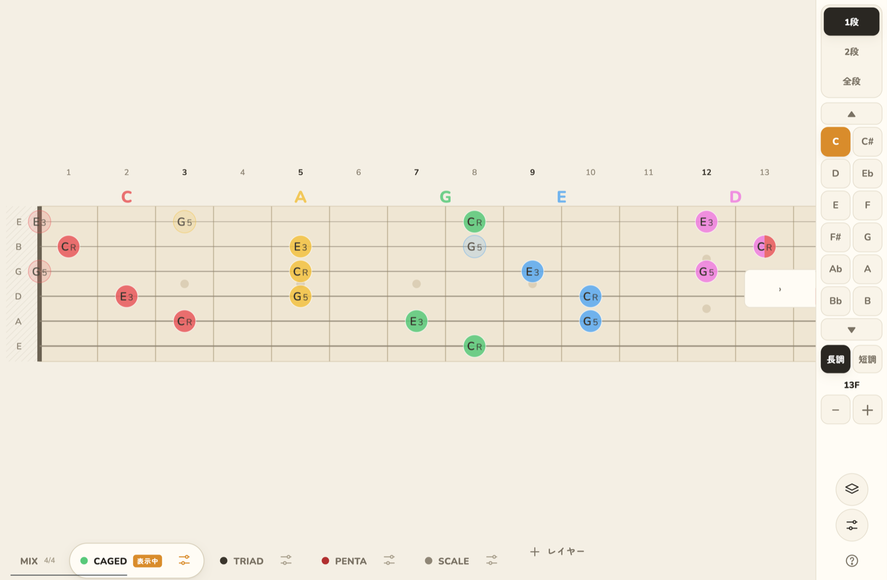
「CAGED の C フォームは、ペンタのどの Box と重なっているのか」を知りたいときは 2段。上段・下段をそれぞれ選べます。ネック下に「上段」「下段」の 2 本の列が出るので、それぞれで層を選んでください。同じものを選ぶと入れ替わります。
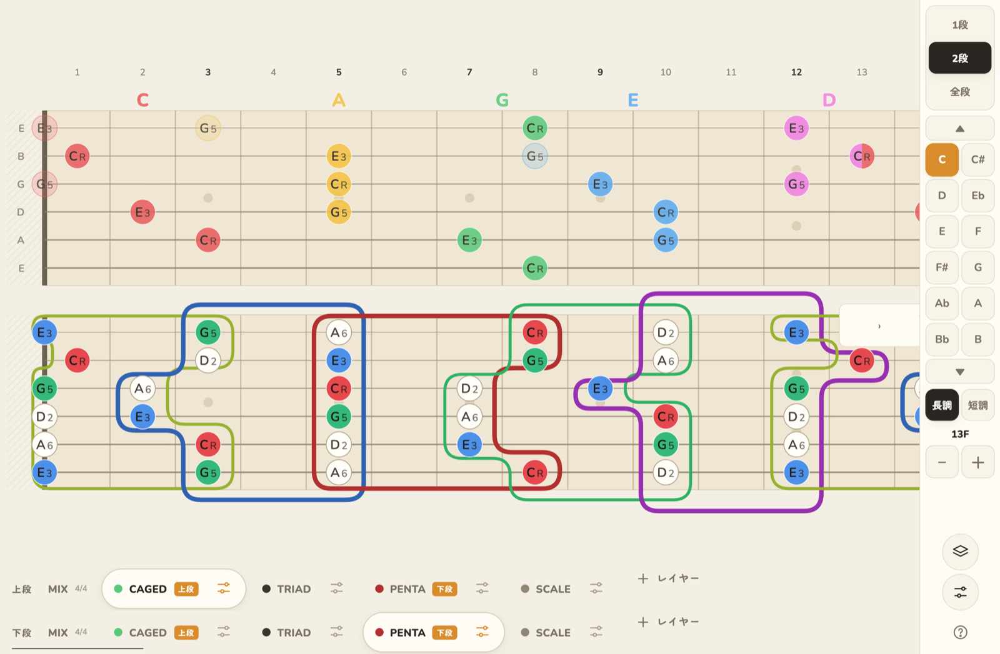
全段は、MIX を上に固定して、その下に各層を縦に並べます。2 段目以降は縦にスクロールし、左の列の名前はそれに追従します。左の列は ‹ で畳めるので、指板を広く取りたいときに使ってください（右の操作列も › で畳めます）。
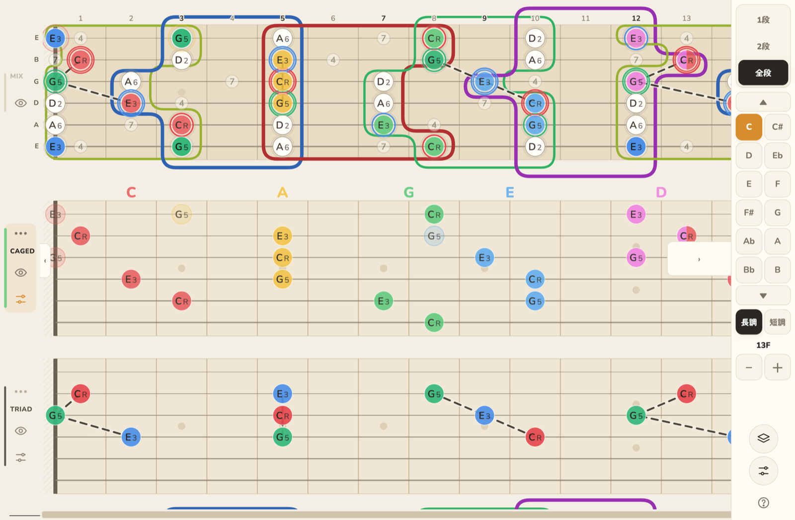
右の列の 短調 に切り替えると、選んだキーを短調の主音として読み直します。音の集合は平行長調と同じまま、度数と色だけが主音基準に移ります（A 短調なら A が赤、C が青の ♭3）。トライアドも短三和音に入れ替わります。
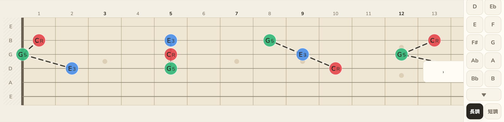
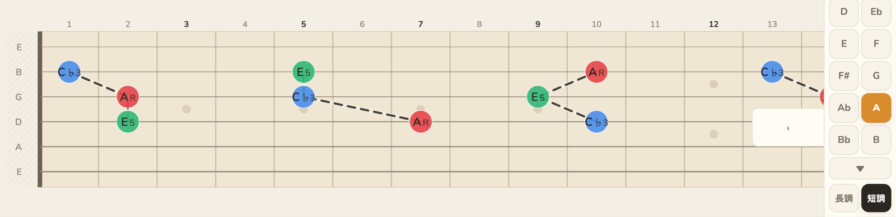
トライアドの弦セットは複数選べます。4-3-2 だけから始めて、慣れたら 3 弦セットを足すと、同じ和音が指板の上下でどう並ぶかが見えます。点線は設定の「点線」ボタンで消せます。
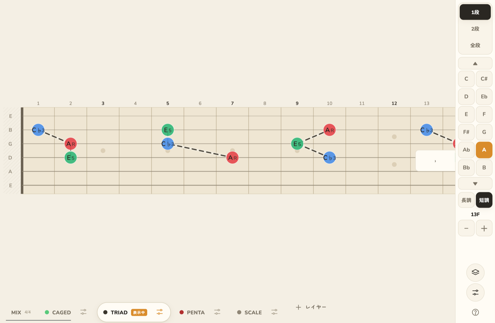
右の列のスライダーのアイコンから表示設定。表示（1段/2段/全段）・音の出し方（音名 / 度数 / 両方）・拡大・MIX 段の表示をまとめて切り替えられます。シートは半透明なので、後ろの指板を見ながら触れます。
保存の行で、いまの状態に名前を付けて残せます。レイヤー構成・キー・長短・表示・拡大まで丸ごと。名前を押すと戻り、× で消えます。いじり倒しても戻せるので、遠慮なく触ってください。
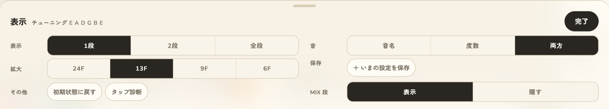
ヘッダー下の「＋ レイヤー」か、右の列のレイヤーアイコンからレイヤー一覧。ペンタ・CAGED・トライアド・スケールに加えて、オクターブ（同じ音を指板中で見つける）、Ⅰ·Ⅳ·Ⅴ（キーの中でコードがどこにあるか）、ブルーノートを足せます。
並びはドラッグで変えられます。上にあるものほど手前で、MIX では上の層が丸を塗ります。ペンタを主役にしたいときは、ペンタを CAGED より上へ。
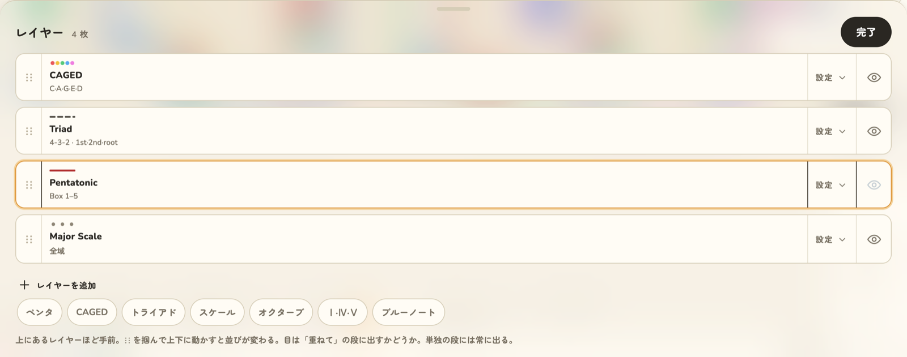